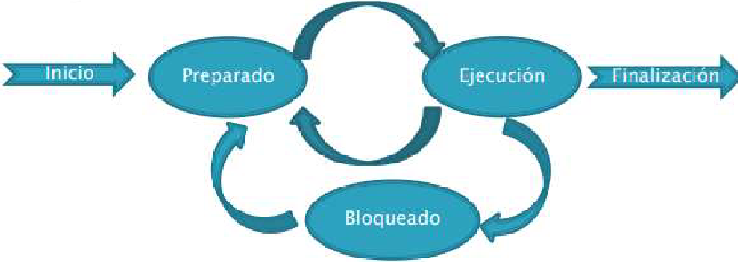

¿Qué es un proceso?
Es todo programa que pasa a ejecución y por tanto hace uso de recursos del sistema como la memoria,
procesador y el disco. Incluye, instrucciones del programa en ejecución, como los datos que usa y crea.
Es un programa en ejecución y por tanto: ocupa memoria, necesita tiempo de ejecución en el procesador y
puede acceder a recursos del sistema. Los procesos son creados por otros procesos y dependen de ellos,
pueden ser lanzados por usuarios o por otros procesos, creándose árboles de procesos.
Proceso es un programa en ejecución y por tanto: ocupa memoria, necesita tiempo de ejecución en el
procesador y puede acceder a recursos del sistema. Los procesos son creados por otros procesos y
dependen de ellos, pueden ser lanzados por usuarios o por otros procesos, creándose árboles de
procesos.
¿Quién gestiona los procesos?
·El sistema operativo es el encargado tanto de crear, como de gestionar las transiciones, las comunicaciones
entre ellos, entre el resto de componente físicos, así como la finalización de los mismos.
·Cuando se diseña el SO, se definen diferentes estrategias de gestión. Así nos encontramos con una gestión
diferente entre diferentes sistemas operativos.
¿Cómo se gestionan los procesos?
El SO es el encargado de mantener una estructura en la que se almacena toda la información, que se denomina
bloque de control de proceso (BCP). Se almacena toda la información útil durante el ciclo de vida del proceso.
Por ejemplo guarda información como:
Identificador del proceso (PID). El estado en el que está: preparado, ejecutando.. Espacio que ocupa en memoria. Permisos Propietario.
Ciclo de vida de los procesos:
En los sistemas operativos actuales, conviven diferentes procesos que se ejecutan sobre un solo procesador.
Sin embargo, el usuario puede lanzar y ejecutar más de un proceso a la vez.
El sistema operativo tiene que ser capaz de gestionar todos ellos y de asegurarse que se ejecutan de modo
seguro, sin interferir las órdenes de uno sobre las de otros
Los principales estados por los que un proceso pasa son:
Ejecución: En este estado está el proceso cuyas
instrucciones están ejecutándose en el CPU.
Preparados: Están todos los procesos que están en
espera de ejecutar instrucciones en el procesador.
Bloqueados: son los procesos que están esperando
la respuesta de algún otro proceso para poder
continuar con su ejecución.

Hilos de procesos
En ocasiones, los procesos se dividen en hilos que se encargan de realizar tareas de manera separada, que
puede ser concurrente.
Los hijos suelen compartir información con el proceso padre, pero mantienen información propia, como es
el contador de programa y el estado de ejecución.
LINUX
Mediante el comando ps podemos ver los procesos desde la consola de comandos de Linux. Mediante el
comando kill podemos terminar procesos.
ps Para ver procesos:
Un proceso en Linux se compone de UID(Usuario), PID(identificador), PPID(PID del padre), TTY(desde
que sesión se ejecuta)
A: muestra todos los procesos que se están ejecutando en el sistema (los de todos los usuarios).
-a: muestra todos los procesos excepto los que no están asociados a la terminal con la que se ejecuta el
comando
C [nombre del proceso]: muestra únicamente los procesos que tienen el nombre que se ha indicado
d: muestra todos los procesos sin los nombres de los usuarios cuya sesión está asignada al proceso.
-e: muestra lo mismo que –A (son equivalentes).
-f: muestra todos los procesos con mayor detalle.
r: muestra únicamente los procesos que están ejecutándose en ese momento.
T: muestra únicamente los procesos asignados a la terminal con la que se ejecuta el comando ps.
x: muestra únicamente los procesos que pertenecen al usuario ejecutor.
Ps aux: procesos por usuario
Htop nos muestra el estado actualizado, top es un comando similar pero menos visual
KILL para matar procesos
fg 1 mueve el proceso a primer plano
bg 1 mueve el proceso a segundo plano
Si añadimos un & al final de un comando que queramos ejecutar, se ejecutará en segundo plano.
Para ver TODOS los procesos Systemctl
Si queremos ver los procesos en ejecución Systemctl list-unit-files –type service –all
Si queremos ver los procesos en ejecución Systemctl list-unit-files –type service –all
Si queremos ver los procesos en ejecución Systemctl list-unit-files –type service –all
Ver el estado de los servicios con Systemctl status (“nombre del servicio”)
Para reiniciar el servicio seria con Systemctl restart/stop/start (“nombre del servicio”)
Para apagar o encender servicios de inicio del SO Systemctl enable/disable (“nombre del servicio”)
Los eventos se registran en el directorio /var/log
Podemos acceder a los ficheros con Cat /var/log/auth
Se puede filtrar dentro de el fichero en el directorio con | grep (variable)
Para ver los eventos del arranque del SO dmesg
También podemos filtrar el resultado con | grep (variable)
Podemos ver las primeras o ultimas lineas con |tall/head -n(numero de lineas)
Podemos ver toda la información mas cozzy con -H
Para ver la fecha y hora usaríamos -T
WINDOWS
En Windows tenemos la herramienta de administrador de tareas desde el entorno gráfico. Desde esta
herramienta podemos ver el uso de CPU que está consumiendo, el uso de memoria, disco y red.
También podremos ver el uso de CPU y de memoria que está utilizando cada proceso.
En los sistemas operativos actuales, conviven diferentes procesos que se ejecutan sobre un solo procesador.
Sin embargo, el usuario puede lanzar y ejecutar más de un proceso a la vez.
El sistema operativo tiene que ser capaz de gestionar todos ellos y de asegurarse que se ejecutan de modo
seguro, sin interferir las órdenes de uno sobre las de otros.
Los principales estados por los que un proceso pasa son:
◦Ejecución: En este estado está el proceso cuyas
instrucciones están ejecutándose en el CPU.
◦Preparados: Están todos los procesos que están en
espera de ejecutar instrucciones en el procesador.
◦Bloqueados: son los procesos que están esperando
la respuesta de algún otro proceso para poder
continuar con su ejecución.
Get-process ver los procesos
Get-process -id/-name x* obtener los procesos que cumplan el id o nombre
Stop-process (id de proceso) parar el proceso con el id indicado
Stop-process -name x* parar el proceso con el nombre indicado
Son procesos especiales, que dependen del SO, proporcionan funcionalidades tanto en equipos clientes como en
equipos servidores. Desde el panel de servicios podemos ver, su descripcion, estado o tipo de inicio.
Al acceder a uno de ellos podemos inciar pausar o parar Tambien cambiar el modo en que se incia.
De manera general, se recomienda desactivar todos
aquellos servicios que no son estrictamente necesarios.
Esta medida es más importante en los servidores.
También se pueden activar todos aquellos que sean
necesarios. Fíjate que no se desinstalan, sólo se
desactivan.
Get-service para ver los servicios
Stop-Service parar un servicio
Start-Service iniciar un servicio
–StartupType Para cambiar la forma en la que activan los procesos indicamos forma en la que inicia:
Manual, boot, deshabilitado, automatic
Desde la herramienta de Registro de Eventos podemos acceder al histórico y ver que está pasando o que ha
pasado en el sistema. Podemos, por ejemplo ver errores producidos. Los eventos de Windows suelen estar en el directorio:
%systemroot%\system32\Winevt
Registro de eventos
Fíjate que hay mensajes de Información, de advertencia y de
error y que los podemos filtrar.
El ejemplo muestra un error de replicación:
Una replicación es el proceso mediante el cual las
modificaciones en un controlador de dominio se actualizan
en el resto del dominio
Desde cmd con el comando env vemos las variables del entorno.
·Podemos hacer uso de estas variables utilizando el carácter «%» de la forma %variable%.
·Por ejemplo en script utilizamos la variable %homepath% para hacer referencia a la ruta del usuario.
env Nos muestra las variables de entorno
%nombre-variable% Para usar la variable del entorno
get-eventlog -list para ver la lista completa
get-eventlog “DNS server” busca los eventos del servidor DNS
get-eventlog -newest 3 muestra los 3 últimos eventos
Podemos sacar todos los errores del sistema
get-eventlog(Que pedimos(eventos)) -logname “system”(que log buscamos por nombre) -Entrytype “Error”(en la columna x, que buscamos)
Es decir, llamamos a eventlog, buscamos los que son del system y que en la columna entrytype muestren error